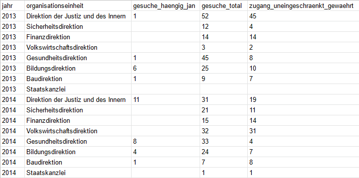

Version, Datum: v1.2, 2024-08-14
Status: in Kraft
Verwalterin: Fachausschuss Open Government Data des Kantons Zürich
Feedback (Hinweise, Wünsche und Fragen) bitte als Issue erfassen oder per E-Mail senden an: info@open.zh.ch
Leitlinien des Kantons Zürich für einfach nutzbare Behördendaten
Handlungsleitende Normen, um offene Behördendaten (‘Open Government Data’, OGD) bereitzustellen, die einfach nutzbar sind: - Daten-Formate - Daten-Strukturen - Metadaten
Daten-Formate
Grundsatz
Offene Daten stehen in einem nicht-proprietären, offenen Format zur Verfügung.
Vorgaben
Für tabellarische Daten verwenden wir das Format CSV (nicht XLS) mit UTF-8 Codierung.
Variabeln und Werte trennen wir mittels Kommata , (nicht mittels Semikolons ;) voneinander ab. - So erstelle ich aus einer Excel-Datei ein maschinenlesbares CSV.
Empfehlungen
Für Daten mit komplexen Strukturen oder um Daten einfach zwischen Programmen und Systemen zu übertragen, eignen sich die Formate JSON sehr und XML gut.
Daten-Strukturen
Grundsatz
Offene Daten stehen als strukturierte Daten zur Verfügung (nicht als Word, PDF oder Fliesstext).
Vorgaben
Tabellarische Daten im Format CSV strukturieren wir gemäss dem Prinzip ‘Tidy Data’.
Das heisst: pro Variable eine Spalte, pro Beobachtung eine Zeile und pro Wert eine Zelle.
Beispiel:

Pro Variable eine Spalte
Keine Spalten-Hierarchien, also keine miteinander zusammengeführten Zellen (z.B. um Ober- und Unterkategorien zu repräsentieren), sondern Oberkategorien in einer ersten Spalte, Unterkategorien in einer zweiten Spalte.
Spaltenüberschriften (Variabeln): - sind keine alleinstehenden Jahreszahlen oder andere Datumsangaben, - beginnen nicht mit einer Zahl, - haben keine Leerzeichen, sondern sind entweder zusammengeschrieben (Gross- und Kleinbuchstaben sind möglich) oder besser mittels ‘Underscore’ verbunden (z.B. gesuche_total), - haben keine Umlaute, sondern sind ausgeschrieben als ae, oe, ue und - haben keine Sonderzeichen, sondern sind ausgeschrieben (z.B. prozent statt %).
jahr,organisationseinheit,gesuche_haengig_jan,gesuche_total,zugang_uneingeschraenkt_gewaehrt
2013,Direktion der Justiz und des Innern,1,52,45
2014,Direktion der Justiz und des Innern,11,31,19
...Wir verzichten auf überflüssige Variablen (z.B. mit denselben Wert über die gesamte Reihe). Die Anzahl Variablen ist nicht beschränkt. Dabei spielt es keine Rolle, wenn man in der Fensteransicht nicht mehr alle Variablen auf einmal sieht.
Pro Beobachtung eine Zeile
- Keine Leerzeilen.
- Keine Fussnoten und ähnliche Verweise. Hinweise vermitteln wir:
- entweder in einer eigenen Spalte oder
- (wenn kurz) in der Metadaten-Beschreibung der entsprechenden Daten-Ressource oder
- (wenn ausführlicher) als HTML-Page, TXT- oder PDF-Datei, die wir in den Metadaten unter “Weitere Informationen” referenzieren.
Pro Wert eine Zelle
Alle Zellen einer Spalte haben dasselbe Daten-Format. Die häufigsten sind: 1. Text 2. Zahl 3. Datum 4. Uhrzeit 5. URL.
Einheitsangaben dürfen nicht zusammen mit Werten in derselben Zelle stehen.
1. Text
Werte mit Daten-Format Text, die Kommas enthalten, klammern wir zwingend mittels Anführungs- und Schlusszeichen ein (z.B. "Französisch, Deutsch"). Das ist wichtig, damit diese Text-Inhalte (in der Fachsprache bezeichnet als String bzw. Zeichenkette) trotz Leerzeichen oder Kommas als zusammengehörend interpretiert werden.
2. Zahl
Werte mit Daten-Format Zahl formatieren wir einheitlich ohne Hochkommas, Leerzeichen oder andere 1000er-Trennzeichen. - Als Dezimaltrennzeichen verwenden wir einen Punkt. - Ob man rundet oder nicht, kommt auf den Datensatz und seine Nutzung an. Falls gerundet wird, muss dies aber in den Metadaten deklariert werden.
3. Datum
Werte mit Daten-Format Datum geben wir nicht als Zeichenketten (z.B. 24. Dez. 2021) an, sondern verwenden den internationalen Standard ISO 8601: YYYY-MM-DD (z.B. 2021-12-24).
4. Uhrzeit
Werte mit Daten-Format Uhrzeit geben wir dem internationalen Standard ISO 8601 gemäss an als hh:mm:ss. Wir verwenden die Zeitzone UTC+1: YYYY-MM-DDThh:mm:ssTZD (z.B. 2021-12-24T19:20:30+01:00).
5. URL
Werte mit Daten-Format URL schreiben wir standardmässig aufrufbar aus im Format https://....
Empfehlungen
Wir wählen möglichst aussagekräftige Spaltenüberschriften (Variabeln). Ihre Bedeutung erklären wir: - (wenn kurz) in der Metadaten-Beschreibung der entsprechenden Daten-Ressource oder - (wenn ausführlicher) auf einer HTML-Page, in einer TXT- oder PDF-Datei, die wir in den Metadaten unter “Weitere Informationen” referenzieren.
Werte, die ausdrücklich unbekannt sind, weisen wir als NA aus.
Zellen ohne Werte lassen wir leer:
jahr,organisationseinheit,gesuche_haengig_jan,gesuche_total,zugang_uneingeschraenkt_gewaehrt
2013,Direktion der Justiz und des Innern,1,52,45
2013,Sicherheitsdirektion,,12,4
2013,Finanzdirektion,,14,14
2013,Volkswirtschaftsdirektion,,3,2
2013,Gesundheitsdirektion,1,45,8
2013,Bildungsdirektion,6,25,10
2013,Baudirektion,1,9,7
2013,Staatskanzlei,,,
...Wir empfehlen, Werte mit Daten-Format Geokoordinaten dem globalen geodätischen Referenzsystem WGS 84 gemäss anzugeben als:
latitude_WGS84,longitude_WGS84
47.3786314,8.54110776
...Wenn alternativ der Bezugsrahmen der neuen Landesvermessung LV95 (Bezugssystem CH1903+) verwendet wird, ist das wie folgt anzugeben:
north_coordinate_lv95,east_coordinate_lv95
1248117.48,2683256.46
...Merkmale, die oft in Datensätzen vorkommen (beispielsweise Koordinaten) benennen und messen wir einheitlich. Einige Empfehlungen hierzu liegen in einem separaten Dokument.
Metadaten
Metadaten beschreiben einen Datensatz, sie setzen ihn in Kontext. Sie beschreiben, wofür die Daten erhoben wurden, welche Einschränkungen oder Brüche in der Erhebung zu beachten sind, die zeitliche und räumliche Abdeckung und geben Hinweise auf weitere Hintergrundinformationen. Der Kanton Zürich hält sich an die Schweizer Version des internationalen Metadatenstandards DCAT AP CH. Für deren Erfassung steht den Behörden und behördennahen Organisationen auf dem Kantonsgebiet Zürich die Metadatenverwaltung zur Verfügung. Mit der Benutzung der Metadatenverwaltung ist die Einhaltung von DCAT AP CH gewährleistet.
DCAT AP CH und die Metadatenverwaltung bieten momentan keine Möglichkeit, die Merkmale systematisch zu erfassen. Bis wir dafür eine Lösung gefunden haben, bedienen wir uns verschiedener Übergangslösungen. Sie sind hier beschrieben.